Computational investigation of age related changes in nasal airflow
Candidate: Sean Read
supervisors: Dr Kiao Inthavong & Professor Jiyuan Tu
Outline
- Background and literature review
- model preparation
- simulation
- Geometry
- Flow characteristics
- Heat and vapour transfer
- Conclusions and future work
The suffering of old age
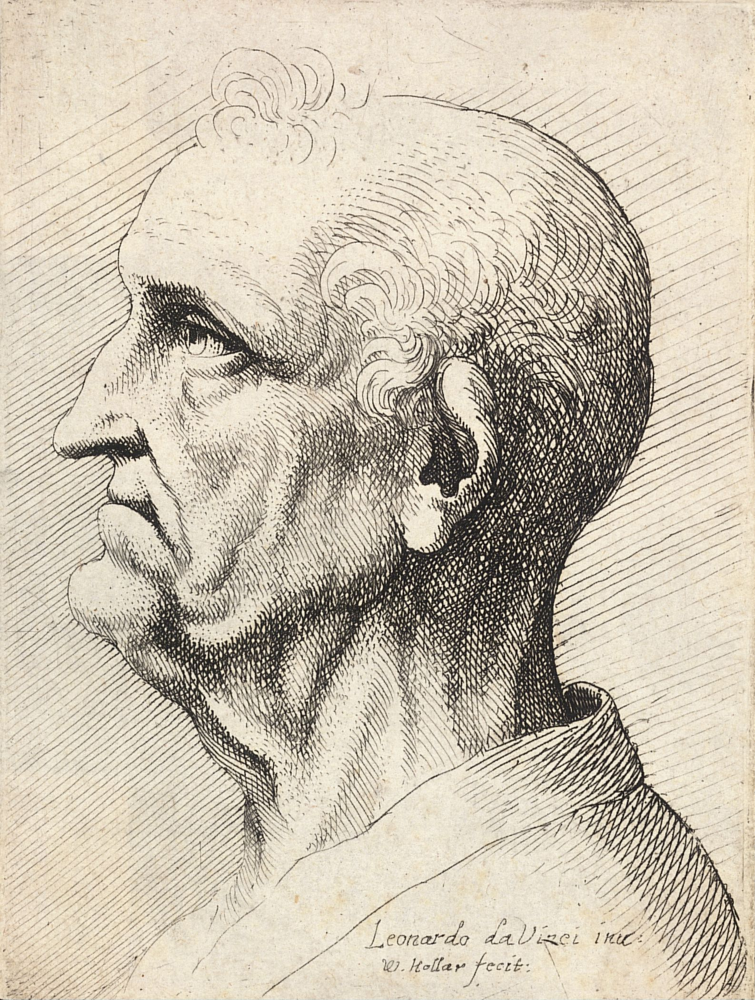
- The geometry of older nasal cavities is different from that of young ones
- These differences impact on quality of life
Air conditioning
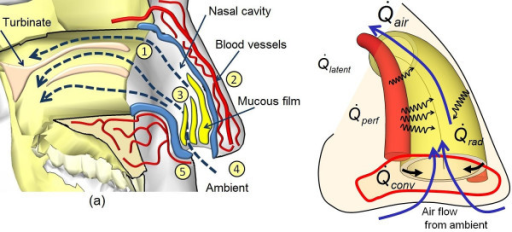
- One of the nasal cavity's primary functions
- Conditions the air for the lungs
- Sensitive to geometry
Atrophic rhinitis
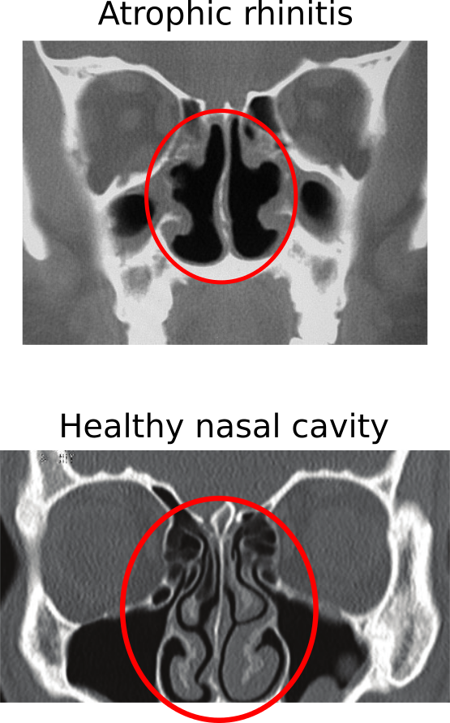
- More common in the elderly
- Linked to geometry
- Linked to air conditioning functionality
Geriatric rhinology
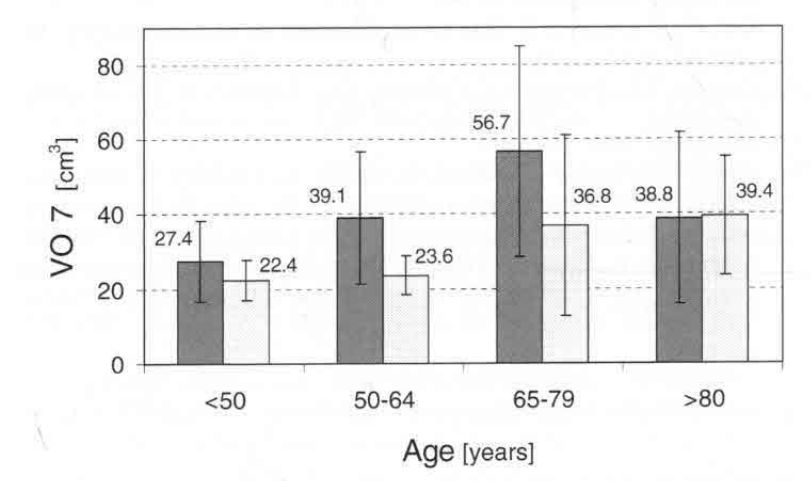
- Various symptoms increase with age
- Higher volume
- Air conditioning effected
Experimental investigations
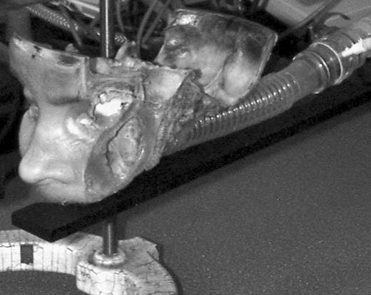
- cadavers
- Rhinomanometry and acoustic rhinometry
- Particle Image Velocimitry
Computational Fluid Dynamics
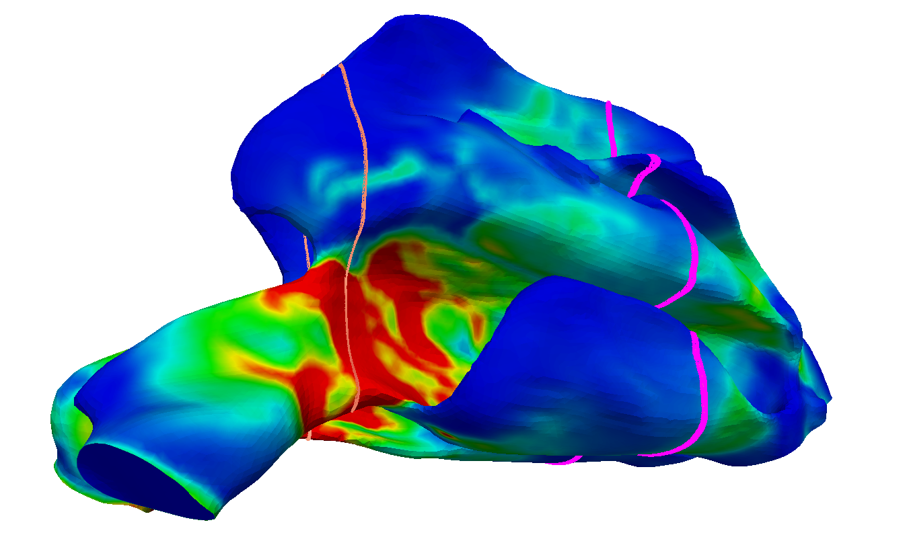
- Cheap
- Detailed results
- Use of ct scans
Air flow
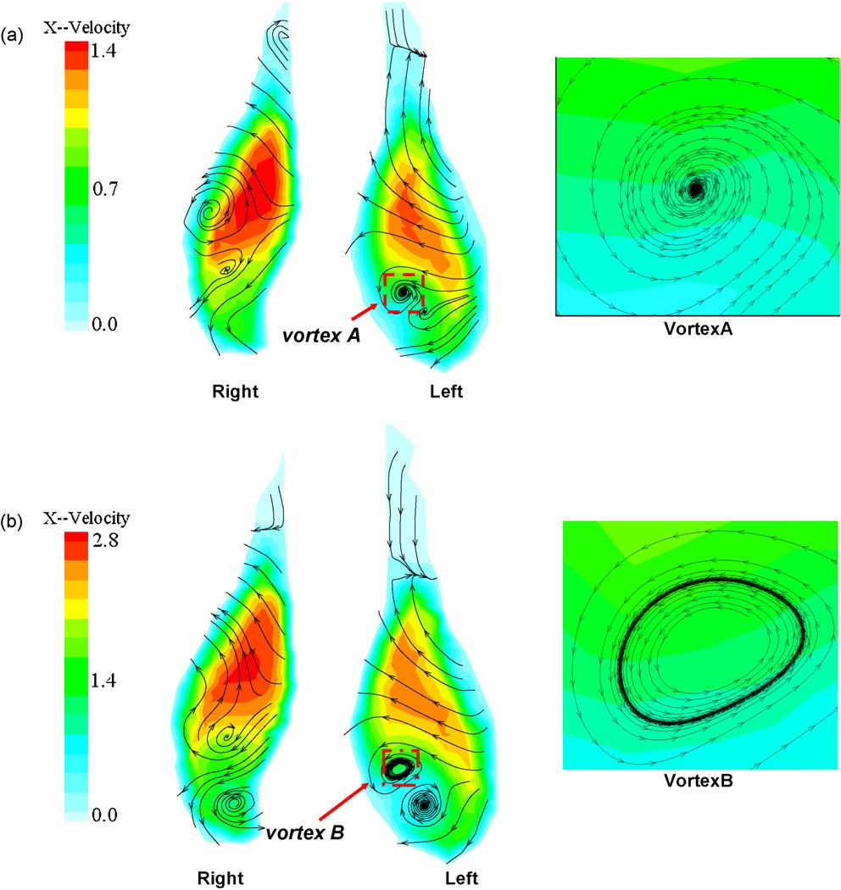
- Various variables
- Qualitative
- Steady vs unsteady
Heat and Vapour transfer
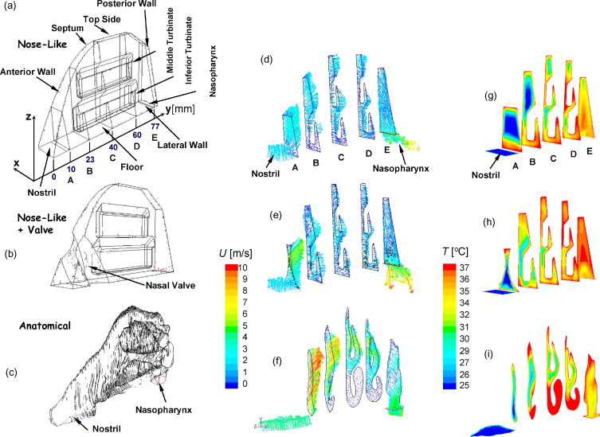
- Good accordance with experimental data
- Qualitative
- Axial variables
Demographic studies
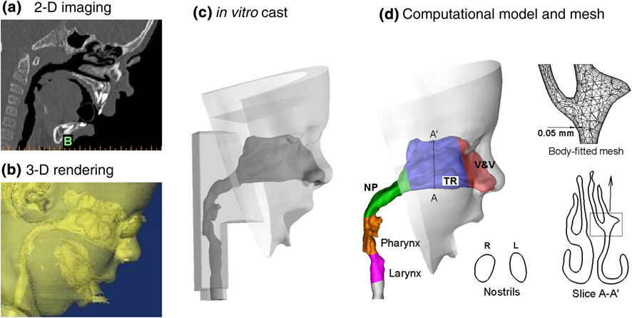
- Effective because of detail of geometry
- Variety of demographics examined
- Age included
Literature gap
- No computational models of elderly
Research questions
- what variations can be observed in the airflow structures between the nasal cavities of young adults and geriatric patients?
- How do any observed variations in flow structure impact upon the air conditioning capacity of the nasal cavity?
Outline
- Background and literature review
- model preparation
- simulation
- Geometry
- Flow characteristics
- Heat and vapour transfer
- Conclusions and future work
Model generation
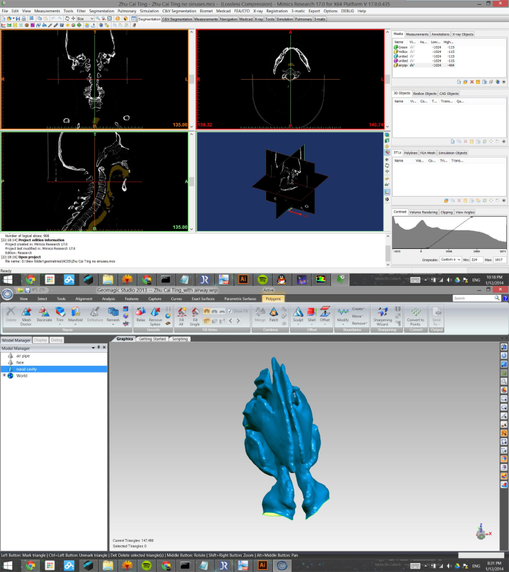
- 3D models extracted from CT scans
- Models refined with CAD software
- 4 New models and one pre-extant
Mesh generation
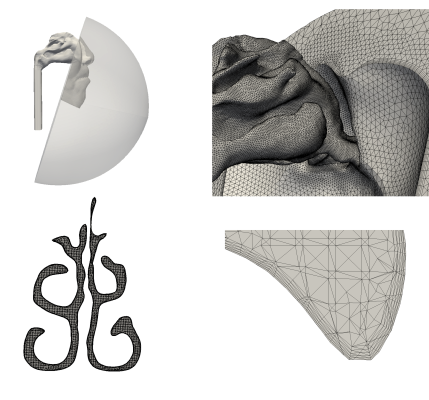
- Unstructured mesh used with prism layers
- Extensions on Exit and entrance
- Commercial pakage ICEM used to generate